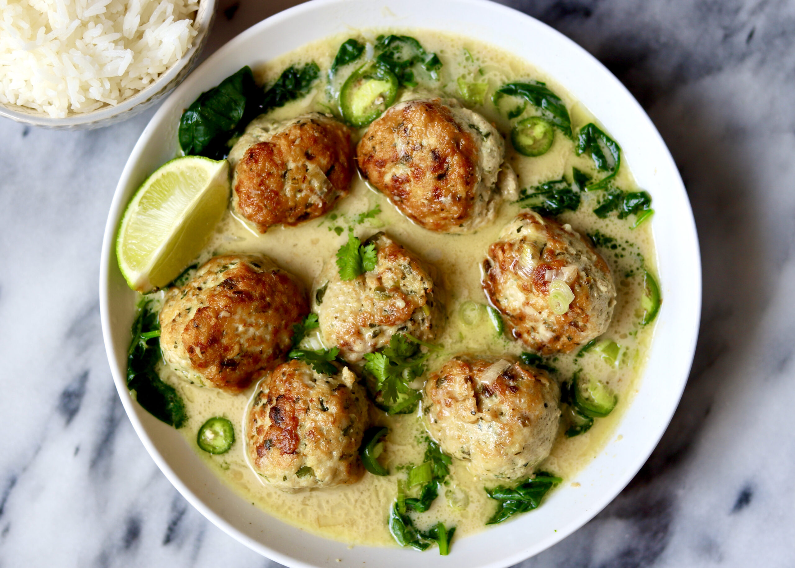

Thai Chicken Meatball Soup
Home

Ingredients
Meatballs
2 1/2 pounds ground chicken
1 tablespoon ginger grated
3 garlic cloves minced
3 stocks of green onion greens only, diced
2 jalapeño deseeded and finely diced
1/3 cup cilantro finely chopped
2 tablespoons fish sauce
1/3 cup of panko crumbs
1/4 teaspoon Kosher salt plus more to taste
Black pepper to taste
4 tablespoon of vegetable oil to fry
Soup
1 tablespoon ginger grated
3 garlic cloves minced
3 stocks of green onion white part only, diced
2 jalapeño deseeded and finely diced
2 tablespoons vegetable or coconut oil plus more as needed
2 cups chicken broth no salt
2 14-ounce can full-fat coconut milk
1 tablespoon fish sauce
1 teaspoon of toasted ground cumin
1 teaspoon of toasted ground cardamom
5 ounces spinach
1 tablespoon lime juice plus lime wedges for serving (optional)
red chilli flaked to serve optional
chili oil optional